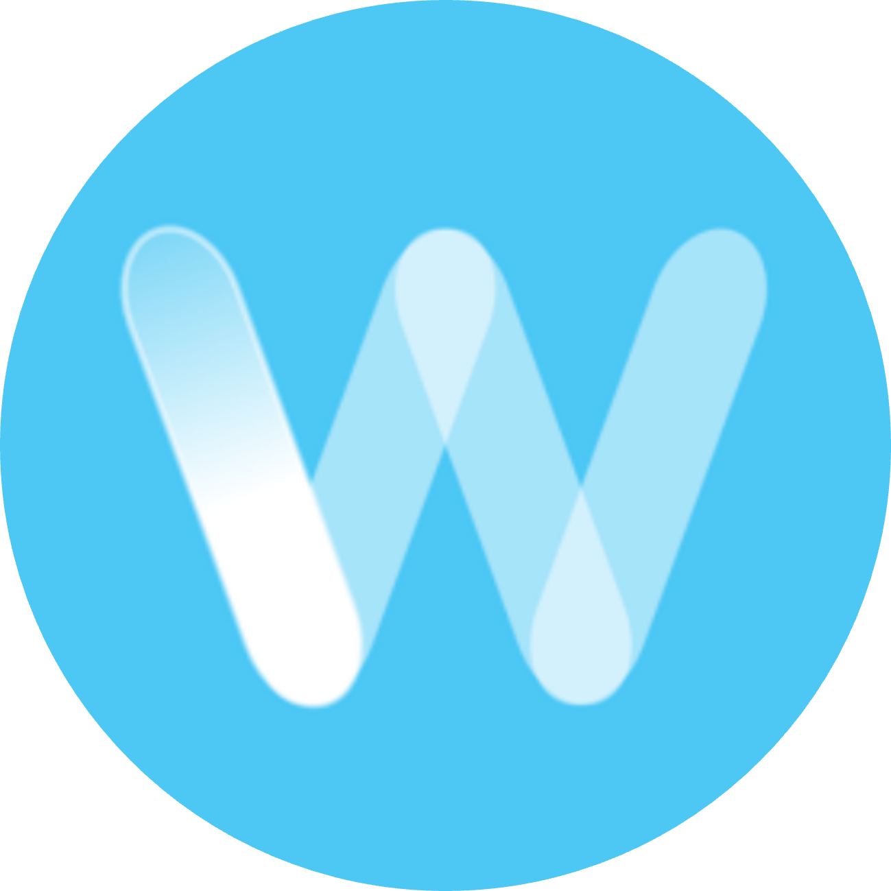

El control y gestión de los fluidos a lo largo de una red de distribución es fundamental
para la operatividad y seguridad de las empresas de servicios. Winscada se
convierte en una solución estándar pero a su vez 100% customizable que garantiza la
retroalimentación "real time" de todos los dispositivos presentes en el campo."
Con el partnership de empresas de renombre como Mercury y
iFix entre muchas otras, este producto se posiciona entre los mejores en su
rubro.

Nuestra experiencia en distintas áreas de empresas de servicios quedaron plasmados en nuestras herramientas comercializables y aplicables en distintas verticales.
Nuestros productos
Winscada
Control de procesos a distancia
Winspatcher
Imputación y conciliación de cobranzas
Una solución integral que abarca y centraliza en una sola herramienta las distintas etapas y
elementos necesarios para que las empresas se aseguren el 100% de sus cobranzas
conciliables.
Con Winspatcher podrá desde generar elementos de cobranza como barras y QRs
para colocar en comprobantes, servicios online de exposición de deuda, imputación,
afectación en cuentas corrientes y conciliación de las mismas una vez que se procesen las
órdenes de pago de los distintos recaudadores.
Wintegration
Integración de sistemas legacy a REST APIs
Esta era de transformación digital plena en la mayoría de las verticales de negocio, hace
que los cambios deban ser necesariamente disruptivos.
Wintegration es la solución necesaria para empresas que cuentan con
sistemas legacy que necesiten acoplarse a la vertiginosa aventura de la digitalización de
procesos.
"Es concebir a un legacy expuesto en una API y un mundo entero de APIs consumidas por un
legacy"
Jiraconn for Avaya ®
Integración de Avaya ACCS y Jira Software / Jira Service Desk
Con Jiraconn, una herramienta a medida de desarrollo propio, es posible integrar un Contact Center que utilice tecnología de Avaya ACCS con la herramienta lider en gestión de tickets como lo es Jira de Atlassian.
De esta manera toda la potencia de Jira es automáticamente alcanzada ante cada llamada o contacto que reciba, permitiendo el seguimiento de los casos con los mejores estándares de la industria.